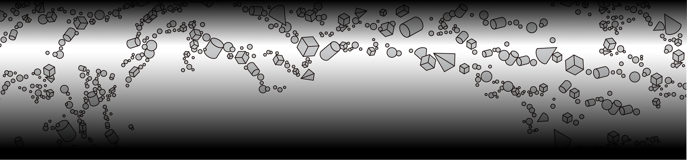
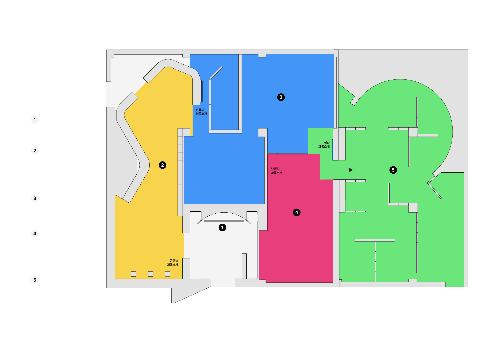

청주대학교 예술대학 시각디자인학과 제46회 졸업전시회
'경계주의: 변화를 마주하는 태도'
인공지능이 인간의 창작과 지적 활동에 깊이 관여하는 오늘날, 우리는 이미지와 언어, 기술과 물성, 개인과 사회를 구분하던 수많은 경계가 빠르게 변화하고 흐려지는 시대를 살아가고 있습니다. ‘경계주의’는 이러한 변화 속에서 우리가 마주하는 크고 작은 경계를 발견하고, 각자의 시선과 방식으로 바라보며 시각언어로 새롭게 해석하고자 하는 실천적 디자인 활동을 의미합니다. 지난 시간 동안 학생들은 각자의 자리에서 끊임없이 만들고, 수정하고, 부딪히고, 경험하며 자신만의 경계를 마주해 왔습니다.
이번 전시는 그 과정에서 발견한 질문과 고민, 그리고 저마다의 방식으로 경계를 넘어온 여정의 결과를 한자리에 담았습니다. 서로 다른 시선으로 바라본 수많은 경계와 그 안에서 탄생한 다양한 디자인을 통해, 관람객 여러분께서도 우리를 둘러싼 경계를 새롭게 바라보고 변화를 마주하는 자신만의 태도를 발견하는 시간이 되기를 바랍니다. 제46회 청주대학교 시각디자인학과 졸업전시회 ‘경계주의 : 변화를 마주하는 태도’는 11월 11일부터 15일까지 한국공예관 3층 갤러리3, 5에서 진행됩니다.
졸업을 앞둔 학생들의 고민과 열정이 담긴 자리에 귀한 걸음 해주시어,
새로운 시작을 함께해 주시면 감사하겠습니다.
2026년 청주대학교 시각디자인학과 제46회 졸업생 일동
‘경계주의’ 포스터

의 입체도형을 형성한다는 점에서 출발하였다. 서로 다른 크기와 형태의 입체도형들은 자유롭게 배치되어 하나의 흐름을 만들어내며,
도형 사이에 형성된 네거티브 공간은 ‘경계주의’라는 글자를 드러낸다.
가까이에서는 개별 도형들이 두드러져 글자를 인식하기 어렵지만, 멀리서 바라보면 전체적인 형태와 글자가 선명해진다.
이를 통해 관찰하는 거리와 시점에 따라 경계의 인식이 달라질 수 있음을 보여주며, 경계는 고정된 것이 아니라
상황과 관점에 따라 새롭게 정의되고 그 기준과 범위가 확장될 수 있음을 전달하고자 하였다.
46회 졸업준비위원회
졸업전시의 전반적인 운영과 일정을 총괄하는 중심 부서이다.
전체 행사의 콘셉트를 기획하고, 각 부서 간의 소통을 조율하며,
전시 진행을 위한 세부 일정과 예산을 관리한다. 또한 전시의 방향성과 일관된 운영을 위해 전체적인 기획안을 구성하고 실행을 총괄한다.
위원장: 안혜원, 부위원장: 신지혜
총무부장 : 정윤서
기획부장 : 조서빈
부원 : 김채은, 정유리
졸업전시의 편집물 제작을 담당하는 부서이다.
학생 개개인의 작품을 체계적으로 정리하고 편집 디자인을 진행한다.
졸업 전시의 콘셉트를 고려하여 도록의 콘셉트, 레이아웃, 타이포그래피 등 인쇄 제작 전 과정을 관리한다.
편집부장 : 최은서
부원 : 가 은, 박지희, 서동윤, 제선우, 최고은
전시 공간의 구조와 배치를 담당하는 부서이다. 실제 전시장의 구성 전반을 기획하고 설치한다. 작품의 배치, 조명, 동선 등을 고려하여 관람객이 전시를 효과적으로 경험할 수 있는 공간 디자인을 완성한다.
디피부장 : 이기훈
부원 : 이강찬, 이지민, 최유민
졸업전시 공식 웹사이트 및 디지털 콘텐츠를 제작하는 부서이다.
학생들의 작품을 온라인에서 감상할 수 있도록 웹 기반 전시 공간을 구축하고, 디지털 전시 환경을 구현한다.
멀티부장 : 고보경
부원 : 강은주, 김선아, 김아연, 서준원, 채한주, 한호정
졸업전시의 대외 홍보를 담당하는 부서이다. SNS를 활용해 다양한 홍보 콘텐츠를 제작한다. 전시 준비 과정, 작품 소개 등을 통해 전시의 스토리를 전달하며, 인지도를 높이는 데 중심적인 역할을 한다.
홍보부장 : 김온슬
부원 : 박시연, 백지윤, 이고은, 이소연
졸업전시의 시각적 아이덴티티를 구축하는 부서이다. 전시 포스터를 디자인하여 전시의 콘셉트를 시각적으로 표현한다. 졸업전시의 얼굴이 되는 그래픽을 통해 관람객에게 주제와 분위기를 효과적으로 전달한다.
그래픽부장 : 반가인
부원 : 민찬우, 서하빈, 양서안, 정윤서, 채한주
도움 주신 분들
포스터 제작 : 반가인, 민찬우, 채한주, 서하빈, 정윤서, 양서안
웹사이트 제작 : 고보경, 한호정, 김아연, 서준원, 강은주, 김선아
전시 약도
